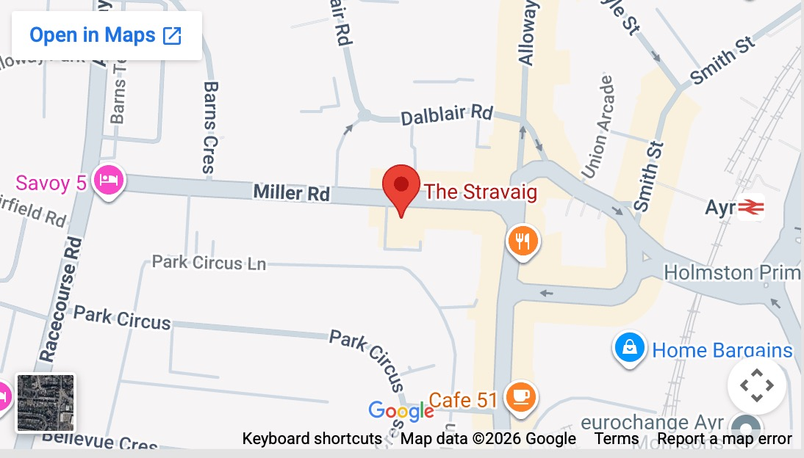

Meetings
Upcoming Meetings
Council Meeting
When: Tue 14 April, 6.00pm-8.00pm
Where: The Stravaig, 11 Miller Road, Ayr KA7 2AX
Rotary Breakfast Meeting
When: Thu 16 April, 8.30am-9.15am
Where: Cafe 51, 51 Beresford Terrace, Ayr
Social / Informal Evening of Truth or Lies
When: Tue 21 April, 6.00pm-7.30pm
Where: The Stravaig, 11 Miller Road, Ayr KA7 2AX
Professor Sathish Srinivasan - on the work of an Ophthalmologist Surgeon
Moment of Reflection and Vote of Thanks: TBC
When: Tue 28 April, 6.00pm-7.30pm
Where: Ayr College Westerly Restaurant (KA8 0ET)
Ken Nairn - Richard Oswald of Auchincruive, and his influence upon the birth of the USA
Moment of Reflection and Vote of Thanks: TBC
When: Tue 5 May, 6.00pm-7.30pm
Where: The Stravaig, 11 Miller Road, Ayr KA7 2AX
Rotary Breakfast Meeting
When: Thu 7 May, 8.30am-9.15am
Where: Cafe 51, 51 Beresford Terrace, Ayr
Weekly Meetings
We usually meet in The Stravaig Restaurant, 11 Miller Road, Ayr KA7 2AX, at 5.30pm on Tuesdays, except on Council Meeting weeks.
Please check the homepage for any changes and contact the Secretary if you are a visitor.
